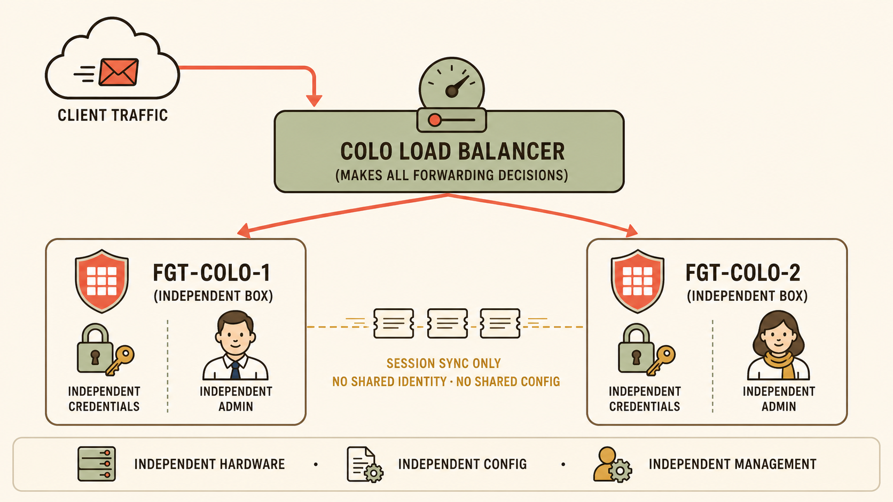

The Colo Team's Three Conditions
The colo already runs its own external load balancer in front of everything, and it isn't going away. The colo team manages their own firewall independently — their own credentials, their own change windows — and won't join a shared HA identity with a box they don't fully control. And because of how the LB's return-path routing works, a reply for a flow that entered on one firewall can legitimately exit through the other.
You already reasoned through why FGCP cannot survive this: config sync erases "separate change windows" before a single packet is even considered, and session ownership is decided internally by the primary — an external box handing a packet to whichever firewall it feels like has no channel into that decision. What's left standing is the thing you derived from first principles: the two boxes share nothing except the session table. That's the topology below.
An Architecture Map fits here because the point isn't a feeling or a trade-off — it's a literal picture of which component owns which decision, and what (if anything) crosses the boundary between two otherwise-unrelated firewalls.

The colo topology: one external LB making every routing decision, two fully independent FortiGates, one thin session-sync channel between them.
What the Topology Is Telling You
- One decision-maker for routing: the LB is the only component in this picture allowed to decide which firewall a packet goes to — not FGT-Colo-1, not FGT-Colo-2, not a cluster.
- Two decision-makers for everything else: each firewall's admin, policy, and change process belongs entirely to that box. Nothing here requires the colo team to coordinate a maintenance window with you.
- One thin channel, one job: the dashed line carries session state and nothing else — no vMAC, no heartbeat electing a primary, no config push. It exists purely so a box that didn't see the handshake still has something to work from.